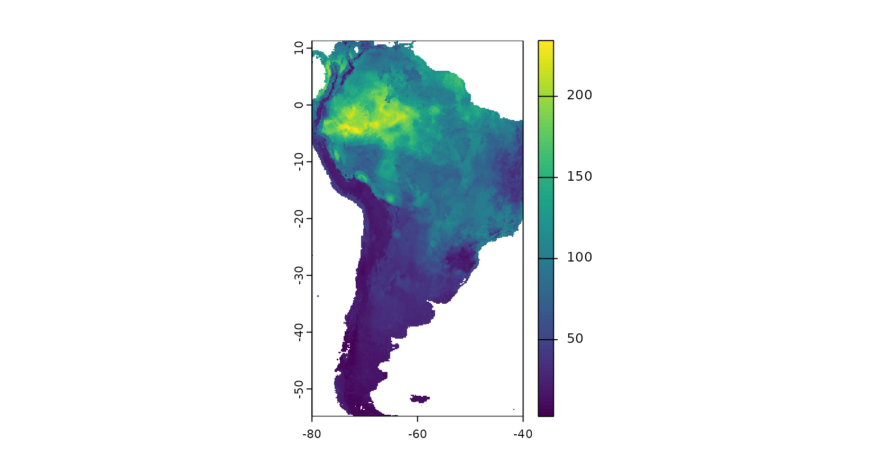
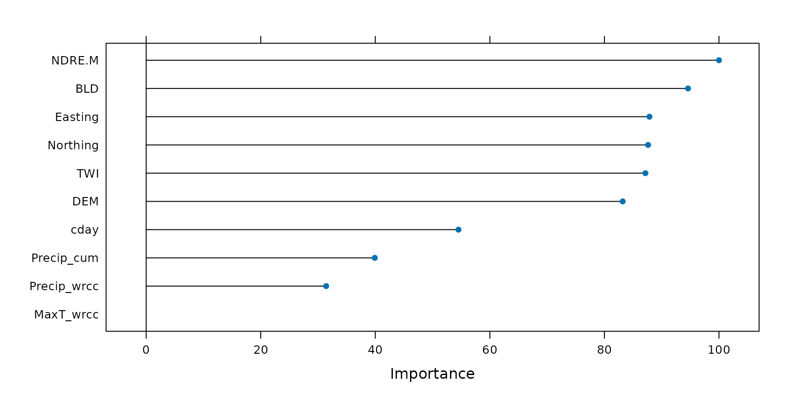

1. Introduction to CAST
Hanna Meyer
2023-04-01
Source:vignettes/cast01-CAST-intro.Rmd
cast01-CAST-intro.RmdIntroduction
Background
One key task in environmental science is obtaining information of environmental variables continuously in space or in space and time, usually based on remote sensing and limited field data. In that respect, machine learning algorithms have been proven to be an important tool to learn patterns in nonlinear and complex systems. However, standard machine learning applications are not suitable for spatio-temporal data, as they usually ignore the spatio-temporal dependencies in the data. This becomes problematic in (at least) two aspects of predictive modelling: Overfitted models as well as overly optimistic error assessment (see Meyer et al 2018 or Meyer et al 2019 ). To approach these problems, CAST supports the well-known caret package (Kuhn 2018 to provide methods designed for spatio-temporal data.
This tutorial shows how to set up a spatio-temporal prediction model that includes objective and reliable error estimation. It further shows how spatio-temporal overfitting can be detected by comparison between validation strategies. It will be shown that certain variables are responsible for the problem of overfitting due to spatio-temporal autocorrelation patterns. Therefore, this tutorial also shows how to automatically exclude variables that lead to overfitting with the aim to improve the spatio-temporal prediction model.
In order to follow this tutorial, I assume that the reader is familiar with the basics of predictive modelling nicely explained in Kuhn and Johnson 2013 as well as machine learning applications via the caret package.
Example of a typical spatio-temporal prediction task
The example prediction task for this tutorial is the following: we have a set of data loggers distributed over a farm, and we want to map soil moisture, based on a set of spatial and temporal predictor variables. We will use Random Forests as a machine learning algorithm in this tutorial.
Description of the example dataset
To do so, we will work with the cookfarm dataset, described in e.g. Gasch et al 2015 and available via the GSIF package (Hengl 2017). The dataset included in the CAST package is a re-structured dataset which was used for the analysis in Meyer et al 2018.
data <- get(load(system.file("extdata","Cookfarm.RData",package="CAST")))
head(data)## SOURCEID VW Easting Northing altitude DEM TWI NDRE.M
## 101689 CAF357 0.303 493828.1 5181021 -0.3 792.5756 3.791253 0.08161208
## 213001 CAF357 0.328 493828.1 5181021 -0.6 792.5756 3.791253 0.08161208
## 324313 CAF357 0.376 493828.1 5181021 -0.9 792.5756 3.791253 0.08161208
## 435625 CAF357 0.350 493828.1 5181021 -1.2 792.5756 3.791253 0.08161208
## 546937 CAF357 0.323 493828.1 5181021 -1.5 792.5756 3.791253 0.08161208
## 101690 CAF357 0.297 493828.1 5181021 -0.3 792.5756 3.791253 0.08161208
## NDRE.Sd Bt BLD PHI Crop Date Precip_wrcc MaxT_wrcc
## 101689 0.2805182 0.0000 1.22 5.84 SL 2010-01-01 5.8 2.8
## 213001 0.2805182 0.0000 1.36 6.32 SL 2010-01-01 5.8 2.8
## 324313 0.2805182 0.0000 1.48 6.52 SL 2010-01-01 5.8 2.8
## 435625 0.2805182 0.0000 1.56 6.68 SL 2010-01-01 5.8 2.8
## 546937 0.2805182 0.0106 1.60 6.72 SL 2010-01-01 5.8 2.8
## 101690 0.2805182 0.0000 1.22 5.84 SL 2010-01-02 6.9 6.1
## MinT_wrcc Precip_cum cday cdayt
## 101689 -3.3 5.8 14611 -0.05233596
## 213001 -3.3 5.8 14611 -0.05233596
## 324313 -3.3 5.8 14611 -0.05233596
## 435625 -3.3 5.8 14611 -0.05233596
## 546937 -3.3 5.8 14611 -0.05233596
## 101690 0.6 12.7 14612 -0.03489950I want to point out on the following information of this dataset: The “SOURCEID” represents the ID for the data logger, “VW” is soil moisture which is our response variable, “Easting” and “Northing” are the coordinates of the data loggers, “altitude” indicates the depth of the soil in which VW was measured, and the remaining columns represent different potential predictor variables which are terrain related (e.g. “DEM”, “TWI”), vegetation indices (e.g. “NDRE”), soil properties (e.g. “BLD”) or climate-related predictors (e.g. “Precip_wrcc”). See Gasch et al 2015 for further description on the dataset.
To get an impression on the spatial properties of the dataset, let’s have a look on the spatial distribution of the data loggers on the cookfarm:
library(sf)
data_sp <- unique(data[,c("SOURCEID","Easting","Northing")])
data_sp <- st_as_sf(data_sp,coords=c("Easting","Northing"),crs=26911)
plot(data_sp,axes=T,col="black")
#...or plot the data with mapview:
library(mapview)
mapviewOptions(basemaps = c("Esri.WorldImagery"))
mapview(data_sp)We see that the data are taken at 42 locations (SOURCEID) over the field. The loggers recorded data between 2007 and 2013 (the dataset here only contains the data from 2010 on). The VW data are given here on a daily basis.
Data subsetting
To reduce the data to an amount that can be handled in a tutorial, let’s restrict the data to the depth of -0.3 and to two weeks of the year 2012. After subsetting let’s have an overview on the soil moisture time series measured by the data loggers.
library(lubridate)
library(ggplot2)
trainDat <- data[data$altitude==-0.3&
year(data$Date)==2012&
week(data$Date)%in%c(10:12),]
ggplot(data = trainDat, aes(x=Date, y=VW)) +
geom_line(aes(colour=SOURCEID))
What we can see is that (as expected) each logger location has a unique time series of soil moisture.
Model training and prediction
In the following we will use this subset of the cookfarm data as an example to spatially predict soil moisture (i.e. to map soil moisture) with (and without) consideration of the spatio-temporal dependencies. To start with, lets use this dataset to create a “default” Random Forest model that predicts soil moisture based on some predictor variables. To keep computation time at a minimum, we don’t include hyperparameter tuning (hence mtry was set to 2) which is reasonable as Random Forests are comparably insensitive to tuning.
library(caret)
predictors <- c("DEM","TWI","Precip_cum","cday",
"MaxT_wrcc","Precip_wrcc","BLD",
"Northing","Easting","NDRE.M")
set.seed(10)
model <- train(trainDat[,predictors],trainDat$VW,
method="rf",tuneGrid=data.frame("mtry"=2),
importance=TRUE,ntree=50,
trControl=trainControl(method="cv",number=3))Based on the trained model we can make spatial predictions of soil moisture. To do this we load a multiband raster that contains spatial data of all predictor variables for the 25th of March 2012 (as an example). We then apply the trained model on this data set.
library(terra)
predictors_sp <- rast(system.file("extdata","predictors_2012-03-25.grd",package="CAST"))
prediction <- predict(predictors_sp,model,na.rm=TRUE)
plot(prediction)
The result is a spatially comprehensive map of soil moisture for this day. We see that simply creating a map using machine learning and caret is an easy task, however accurately measuring its performance is less simple. Though the map looks good on a first sight we now have to follow up with the question of how accurate this map is, hence we need to ask how well the model is able to map soil moisture.
From a visible inspection it is noticeable that the model produces a strange linear features at the eastern side of the farm which looks suspicious. But let’s come back to this later and first focus on a statistical validation of the model.
Cross validation strategies for spatio-temporal data
Among validation strategies, k-fold cross validation (CV) is popular to estimate the performance of the model in view to data that have not been used for model training. During CV, models are repeatedly trained (k models) and in each model run, the data of one fold are put to the side and are not used for model training but for model validation. In this way, the performance of the model can be estimated using data that have not been included in the model training.
The Standard approach: Random k-fold CV
In the example above we used a random k-fold CV that we defined in caret’s trainControl argument. More specifically, we used a random 3-fold CV. Hence, the data points in our dataset were RANDOMLY split into 3 folds. To assess the performance of the model let’s have a look on the output of the Random CV:
model## Random Forest
##
## 654 samples
## 10 predictor
##
## No pre-processing
## Resampling: Cross-Validated (3 fold)
## Summary of sample sizes: 436, 437, 435
## Resampling results:
##
## RMSE Rsquared MAE
## 0.02188303 0.9044144 0.01273172
##
## Tuning parameter 'mtry' was held constant at a value of 2We see that soil moisture could be modelled with a high R² (0.90) which indicates a nearly perfect fit of the data. Sounds good, but unfortunately, the random k fold CV does not give us a good indication for the map accuracy. Random k-fold CV means that each of the three folds (with the highest certainty) contains data points from each data logger. Therefore, a random CV cannot indicate the ability of the model to make predictions beyond the location of the training data (i.e. to map soil moisture). Since our aim is to map soil moisture, we rather need to perform a target-oriented validation which validates the model in view to spatial mapping.
Target-oriented validation
We are not interested in the model performance in view to random subsets of our data loggers, but we need to know how well the model is able to make predictions for areas without data loggers. To find this out, we need to repeatedly leave the complete time series of one or more data loggers out and use them as test data during CV.
To do this we first need to create meaningful folds rather than random folds. CAST’s function “CreateSpaceTimeFolds” is designed to provide index arguments used by caret’s trainControl. The index defines which data points are used for model training during each model run and reversely defines which data points are held back. Hence, using the index argument we can account for the dependencies in the data by leaving the complete data from one or more data loggers out (LLO CV), from one or more time steps out (LTO CV) or from data loggers and time steps out (LLTO CV). In this example we’re focusing on LLO CV, therefore we use the column “SOURCEID” to define the location of a data logger and split the data into folds using this information. Analog to the random CV we split the data into five folds, hence five model runs are performed each leaving one fifth of all data loggers out for validation.
Note that several suggestions of spatial CV exist. What we call LLO here is just a simple example. See references in Meyer and Pebesma 2022 for some examples and have a look at Mila et al 2022 for the methodology implemented in the CAST function nndm.
set.seed(10)
indices <- CreateSpacetimeFolds(trainDat,spacevar = "SOURCEID",
k=3)
set.seed(10)
model_LLO <- train(trainDat[,predictors],trainDat$VW,
method="rf",tuneGrid=data.frame("mtry"=2), importance=TRUE,
trControl=trainControl(method="cv",
index = indices$index))
model_LLO## Random Forest
##
## 654 samples
## 10 predictor
##
## No pre-processing
## Resampling: Cross-Validated (10 fold)
## Summary of sample sizes: 433, 430, 445
## Resampling results:
##
## RMSE Rsquared MAE
## 0.07645742 0.1616273 0.05994028
##
## Tuning parameter 'mtry' was held constant at a value of 2By inspecting the output of the model, we see that in view to new locations, the R² is only 0.16 so the performance is much lower than expected from the random CV (R² = 0.90).
Apparently, there is considerable overfitting in the model, causing a good random performance but a poor performance in view to new locations. This might partly be attributed to the choice of variables where we must suspect that certain variables are misinterpreted by the model (see Meyer et al 2018 or [talk at the OpenGeoHub summer school 2019] (https://www.youtube.com/watch?v=mkHlmYEzsVQ)).
Let’s have a look at the variable importance ranking of Random Forest and see if we find something suspicious:

The importance ranking indicates that among others, “Easting” is an important variable. This fits to the observation of an inappropriate linear features in the predicted map. Apparently the model assigns a high importance to this variable which causes a high random CV performance. But at the same time the model fails in the prediction on new locations because the variable is unsuitable for predictions beyond the locations of the data loggers used for model training.
Assuming that certain variables are misinterpreted by the algorithm we should be able to produce a higher LLO performance when such variables are removed. Let’s see if this is true…
Removing variables that cause overfitting
CAST’s forward feature selection (ffs) selects variables that make sense in view to the selected CV method and excludes those which are counterproductive (or meaningless) in view to the selected CV method. When we use LLO as CV method, ffs selects variables that lead in combination to the highest LLO performance (i.e. the best spatial model). All variables that have no spatial meaning or are even counterproductive won’t improve or even reduce the LLO performance and are therefore excluded from the model by the ffs.
ffs is doing this job by first training models using all possible pairs of two predictor variables. The best model of these initial models is kept. On the basis of this best model the predictor variables are iterativly increased and each of the remaining variables is tested for its improvement of the currently best model. The process stops if none of the remaining variables increases the model performance when added to the current best model.
So let’s run the ffs on our case study using R² as a metric to select the optimal variables. This process will take 1-2 minutes…
set.seed(10)
ffsmodel_LLO <- ffs(trainDat[,predictors],trainDat$VW,metric="Rsquared",
method="rf", tuneGrid=data.frame("mtry"=2),
verbose=FALSE,ntree=50,
trControl=trainControl(method="cv",
index = indices$index))
ffsmodel_LLO## Random Forest
##
## 654 samples
## 3 predictor
##
## No pre-processing
## Resampling: Cross-Validated (10 fold)
## Summary of sample sizes: 433, 430, 445
## Resampling results:
##
## RMSE Rsquared MAE
## 0.1013101 0.2833983 0.0767997
##
## Tuning parameter 'mtry' was held constant at a value of 2
ffsmodel_LLO$selectedvars## [1] "DEM" "NDRE.M" "Northing"Using the ffs with LLO CV, the R² could be increased from 0.16 to 0.28. The variables that are used for this model are “DEM”,“NDRE.M” and “Northing”. All others are removed because they have (at least in this small example) no spatial meaning or are even counterproductive.
Using the plot\(\_\)ffs function we can visualize how the performance of the model changed depending on the variables being used:
plot_ffs(ffsmodel_LLO)See that the best model using two variables led to an R² of slightly above 0.2. Using the third variable could slightly increase the R². Any further variable could not improve the LLO performance. Note that the R² features a high standard deviation regardless of the variables being used. This is due to the small dataset that was used which cannot lead to robust results.
What effect does the new model has on the spatial representation of soil moisture?

We see that the variable selection does not only have an effect on the statistical performance but also the predicted spatial patterns change considerably. It is of note that the linear feature is not any more in the resulting soil moisture map most likely because “Easting” was removed from the set of predictor variables by ffs.
Area of Applicability
Still it is required to analyse if the model can be applied to the entire study area of if there are locations that are very different in their predictor properties to what the model has learned from. See more details in the vignette on the Area of applicability and Meyer and Pebesma 2021.
library(latticeExtra)
### AOA for which the spatial CV error applies:
AOA <- aoa(predictors_sp,ffsmodel_LLO)
plot(prediction_ffs,main="prediction for the AOA \n(spatial CV error applied)")
plot(AOA$AOA,col=c("grey","transparent"),add=T)
#spplot(prediction_ffs,main="prediction for the AOA \n(spatial CV error applied)")+
#spplot(AOA$AOA,col.regions=c("grey","transparent"))
### AOA for which the random CV error applies:
AOA_random <- aoa(predictors_sp,model)
plot(prediction,main="prediction for the AOA \n(random CV error applied)")
plot(AOA_random$AOA,col=c("grey","transparent"),add=T)
#spplot(prediction,main="prediction for the AOA \n(random CV error applied)")+
#spplot(AOA_random$AOA,col.regions=c("grey","transparent"))The figure shows in grey areas that are outside the area of applicability, hence predictions should not be considered for these locations. See tutorial on the AOA in this package for more information.
Conclusions
To conclude, the tutorial has shown how CAST can be used to facilitate target-oriented (here: spatial) CV on spatial and spatio-temporal data which is crucial to obtain meaningful validation results. Using the ffs in conjunction with target-oriented validation, variables can be excluded that are counterproductive in view to the target-oriented performance due to misinterpretations by the algorithm. ffs therefore helps to select the ideal set of predictor variables for spatio-temporal prediction tasks and gives objective error estimates.
Final notes
The intention of this tutorial is to describe the motivation that led to the development of CAST as well as its functionality. Priority is not on modelling soil moisture of the cookfarm in the best possible way but to provide an example for the motivation and functionality of CAST that can run within a few minutes. Hence, only a very small subset of the entire cookfarm dataset was used. Keep in mind that due to the small subset the example is not robust and quite different results might be obtained depending on small changes in the settings.
The intention of showing the motivation of CAST is also the reason why the coordinates are used here as predictor variables. Though coordinates are used as predictors in quite some scientific studies they rather provide here an extreme example of how misleading variables can lead to overfitting.
Further reading
Meyer, H., & Pebesma, E. (2022): Machine learning-based global maps of ecological variables and the challenge of assessing them. Nature Communications. Accepted.
Meyer, H., & Pebesma, E. (2021). Predicting into unknown space? Estimating the area of applicability of spatial prediction models. Methods in Ecology and Evolution, 12, 1620– 1633. [https://doi.org/10.1111/2041-210X.13650]
Meyer H, Reudenbach C, Wöllauer S,Nauss T (2019) Importance of spatial predictor variable selection in machine learning applications–Moving from data reproduction to spatial prediction. Ecological Modelling 411: 108815 [https://doi.org/10.1016/j.ecolmodel.2019.108815]
Meyer H, Reudenbach C, Hengl T, Katurij M, Nauss T (2018) Improving performance of spatio-temporal machine learning models using forward feature selection and target-oriented validation. Environmental Modelling & Software 101: 1–9 [https://doi.org/10.1016/j.envsoft.2017.12.001]
Talk from the OpenGeoHub summer school 2019 on spatial validation and variable selection: https://www.youtube.com/watch?v=mkHlmYEzsVQ.
Tutorial (https://youtu.be/EyP04zLe9qo) and Lecture (https://youtu.be/OoNH6Nl-X2s) recording from OpenGeoHub summer school 2020 on the area of applicability. As well as talk at the OpenGeoHub summer school 2021: https://av.tib.eu/media/54879